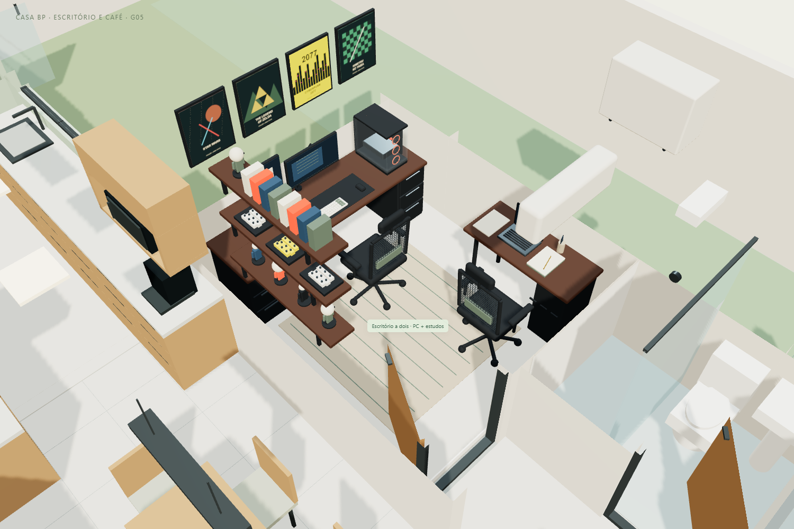
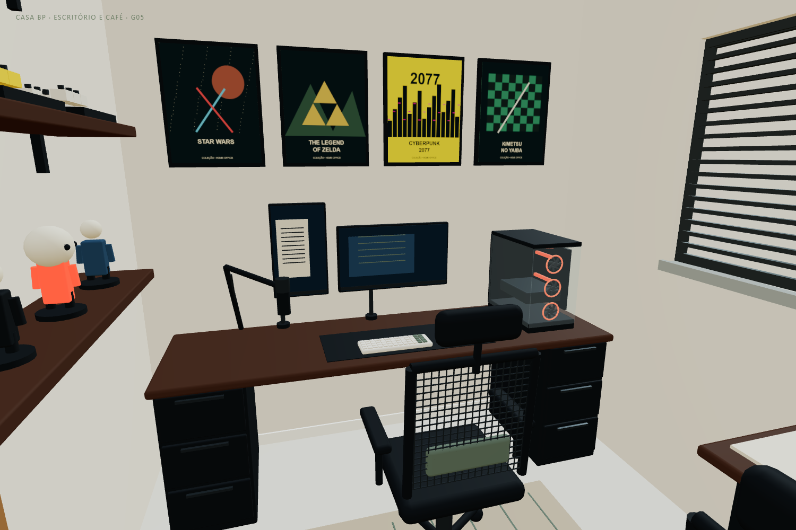
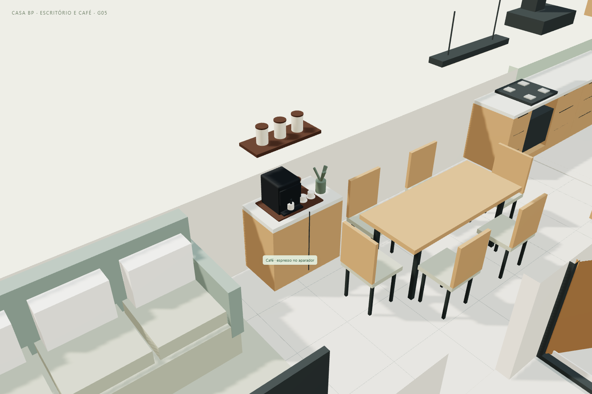

CASA BP · G05 · 11/11/2026
O segundo quarto passa a ser um escritório compartilhado. Foram retiradas as duas camas e o armário antigo para liberar duas estações de uso, sem mudar paredes, vãos ou a janela. Madeira escura, preto, oliva e areia compõem o ambiente.
Abrir o projeto 3D · Tour atualizado · Modelo GLB G05

| Elemento | Dimensão ou posição nominal |
|---|---|
| Ambiente existente | 2,54 × 2,90 m internos, cerca de 7,37 m² |
| Mesa do computador | 2,26 × 0,65 m, tampo a 0,775 m; parede do fundo, apoiada em dois gaveteiros pretos |
| Mesa de estudos | 1,22 × 0,53 m, tampo a 0,775 m; lateral direita, notebook voltado para o usuário |
| Distância entre as bordas das mesas | 0,87 m na faixa lateral direita; cadeiras ocupam parte do espaço |
| Circulação na chegada | Entrada pela esquerda; trecho entre parede esquerda e base da cadeira de estudos tem aproximadamente 1,32 m, na posição desenhada |
| Prateleiras | Três níveis na parede esquerda; 0,24 m de profundidade e 1,25 m de comprimento |
| Tapete | 1,65 × 1,65 m, baixo e sem franja, sob a área central |
A mesa principal fica distante da porta e recebe luz lateral da janela existente. A estação de estudo ocupa a lateral, sem colocar as duas pessoas de costas uma para a outra. As cadeiras foram aproximadas dos tampos, e o caminho de chegada permanece pela esquerda. Não se ampliou a construção.
Ambiente compacto. As cadeiras, braços e equipamentos têm dimensões ilustrativas. As folgas referem-se à posição representada; puxar ou girar as cadeiras altera a circulação. Conferir medidas, altura do tampo, regulagens e alcance com os usuários e os produtos reais. O percurso do tour não comprova acessibilidade nem ergonomia.
PC em gabinete aquário com duas faces de vidro, placa-mãe, placa de vídeo, memórias e seis ventoinhas com aros vermelhos. Monitor horizontal de 27″ e monitor vertical de 21″ à esquerda, com painéis dimensionados pela diagonal em formato 16:9, cada um em braço articulado com pistão a gás. Mousepad, teclado e mouse sem fio, microfone em braço articulado. As duas cadeiras têm encosto mesh, apoio lombar e apoio de pescoço.

Na mesa de estudos: notebook, cadernos, livro aberto e canetas. Nas prateleiras: figuras colecionáveis estilizadas, cabeças grandes inspiradas em Funko, pequenas construções de peças e livros. Os quatro quadros usam composições gráficas autorais inspiradas em Star Wars, The Legend of Zelda, Cyberpunk 2077 e Kimetsu no Yaiba. São representações decorativas simplificadas, sem uso de pôsteres oficiais. Luz de teto e faixa sob a prateleira são ilustrativas; não foi calculada iluminância.
O aparador existente entre sofá e copa recebeu uma cafeteira espresso, bandeja, xícaras, pote, vaso e prateleira com potes. A posição preserva a mesa para seis e evita acrescentar um móvel na passagem.

A geladeira continua ao fundo da cozinha, à esquerda. Ela foi detalhada com portas, divisão do freezer, puxadores e display para ficar reconhecível no corte 3D. A passagem nominal junto ao puxador é de aproximadamente 1,04 m; os 1,20 m entre bancadas permanecem no trecho de trabalho. Abrir portas e retirar gavetas da geladeira não foi simulado.
A porta de correr do banheiro privativo fica aberta, com a folha estacionada junto à parede. O vão existente foi preservado. A porta ripada do dormitório mantém seus controles próprios.
Foi representado um split no escritório, alto na parede da entrada, e outro na lateral do dormitório de casal, fora da janela. As condensadoras aparecem na face externa para o corredor, com base a cerca de 2,10 m. Posições conceituais: capacidade, suportes, circulação de ar, manutenção, drenagem, linha frigorígena e circuitos devem ser definidos no detalhamento. Não se escolheu potência em BTU nem se calculou carga térmica.
Frente, garagem, carro, laje, closet, distribuição da copa G04, bancadas ampliadas, janela da cozinha e lavanderia foram preservados. O tour mantém 16 paradas, agora com uma visita ao escritório. Use os novos botões Escritório, Ver setup de perto e Cantinho do café. O modelo é um estudo de interiores em escala nominal, sujeito à conferência local.
Copa e cozinha da revisão G04 · Frente e acessos G03 · Carro “2024 BYD Seal”, Ddiaz Design, adaptado sob CC BY-NC-SA 4.0.